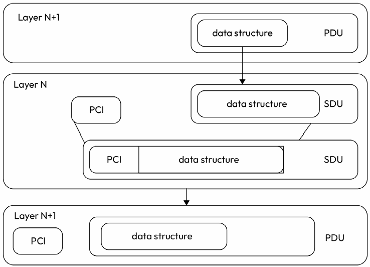
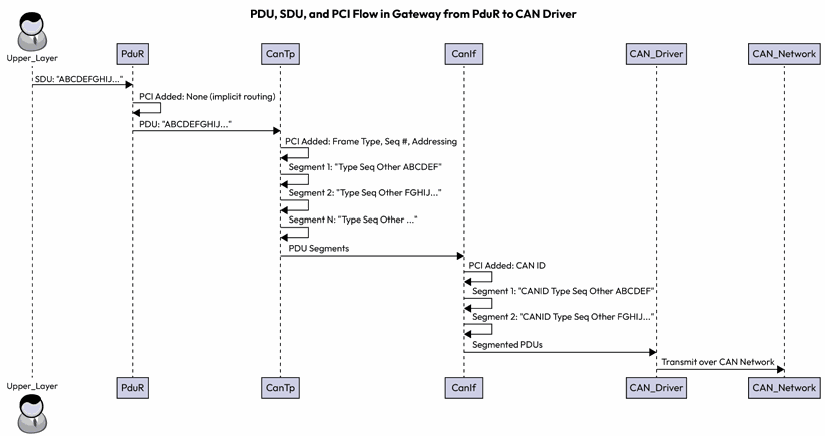
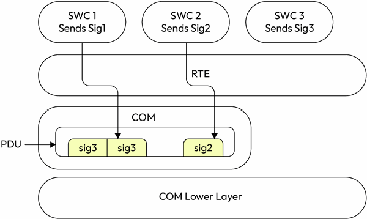
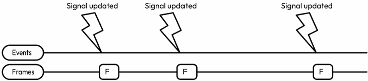
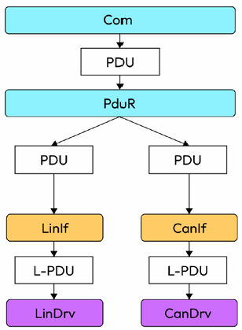
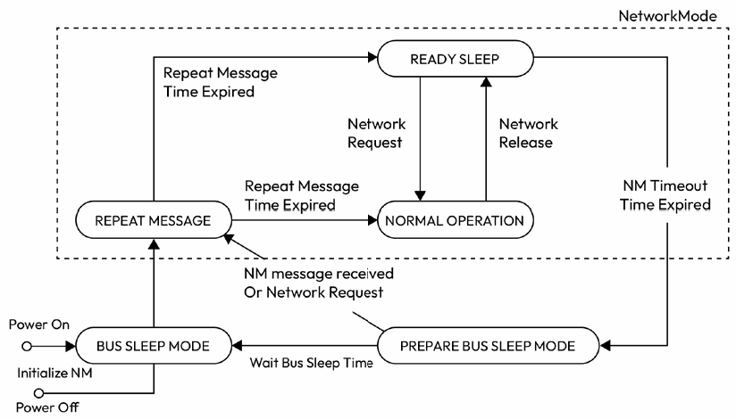

第7章 探索通信栈
AUTOSAR Fundamentals and Applications — Hossam Soffar 著 | AI 辅助翻译
什么是 COM 栈？
假设你是一位开发监测发动机温度 ECU 的工程师。在传统嵌入式实现中，你需要自己处理整个通信过程——配置硬件接口（CAN、FlexRay、LIN），格式化消息数据，管理数据传输的时序和同步，以及实现错误检测和恢复机制。这需要大量底层编码，且高度依赖系统中使用的特定硬件和通信协议。
在 AUTOSAR 中，ECU 间通信通过标准化接口和分层通信栈实现了抽象。在 AUTOSAR 兼容的系统中，同样的场景将按如下方式处理：
- 应用层（Application Layer）：在 ECU 上运行的应用生成表示发动机高温的信号（Signal）
- RTE 层：信号被传递到 RTE，RTE 将应用的通信需求从底层硬件和协议中抽象出来
- 通信栈（Communication Stack）：通信栈接管打包并传输信号的责任，还负责根据预定义的通信路由将消息路由到适当的目标 ECU——消息是通过 CAN、FlexRay 还是其他汽车通信总线发送？
通信硬件接口——如 CAN 控制器或 Ethernet PHY——处理消息在通信总线上的物理传输。
COM 栈概述

图 7.1 – COM 分层架构
AUTOSAR 通信栈分为三个主要部分：
- 数据路径（A）：处理信号、PDU（PDU（Protocol Data Unit，协议数据单元），协议数据单元）及其传输
- 控制路径（B）：处理通信通道的状态
- 网络管理（C，Network Management（网络管理））
这些部分分布在服务层（Service Layer）、ECU 抽象层（ECU Abstraction Layer）和硬件层之间。
服务层通信模块
- COM：进一步抽象通信细节，提供 PDU 处理服务，核心职责是处理基于信号的通信，抽象底层通信协议和硬件接口
- PduR（PDU Router（PDU路由器））：在层间路由 PDU——例如从 COM 层到适当的总线特定接口（CAN、FlexRay、LIN 等），或提供两个通信接口之间的网关功能（如 CAN 到 Ethernet）
- BUS-TP（传输协议）：管理 ECU 间可靠数据传输，处理分段、流控、错误检测和寻址（如 CAN-TP）
- BUS-SM（总线状态管理器）：基于来自 ComM（通信管理器）的请求管理每个网络的通信模式转换
- ComM（通信管理器）：根据 ECU 状态协调通信路径的激活/停用，支持 Full（全部通信可用）、Partial（部分通道）和 No Communication 模式
ECU 抽象层模块
- CanIf（CAN 接口）：抽象底层 CAN 控制器和收发器，成为上层 PduR 和底层 CAN 驱动之间的桥梁
- LinIf（LIN 接口）：类似 CanIf，管理 LIN 帧的内外传输
- EthIf（Ethernet 接口）：抽象以太网控制器，提供 ETH 收发器与上层模块间的标准接口
- FrIf（FlexRay 接口）：管理 FlexRay 通信，抽象底层驱动细节
PDU 与 PCI（协议控制信息）

图 7.2 – PDU 与 PCI
PDU 是通信栈各层之间传输的数据包，每层可以添加自己的 PCI。形成嵌套结构——上层 SDU（Service Data Unit，服务数据单元）加上本层的 PCI 构成该层的 PDU。
从 PduR 到 CAN Driver 的数据流

图 7.3 – PduR 到 CAN Driver 的 UML 序列图
上述序列图展示了数据从 PduR 经 CanIf 到 CAN Driver 再经 CanTrcv（CAN 收发器）到物理总线的完整流程。每个模块在传输链中都有其特定的责任。
COM 模块详细解析
COM 模块是通信服务层的核心，为上层 SWC 提供统一的信号级通信接口。COM 将来自不同 SWC 的多个信号打包进 PDU，管理信号的发送模式和传输时机。关键 API 包括：
Std_ReturnType Com_ReceiveSignal(uint16 SignalId, void* SignalDataPtr);
// 从COM模块读取信号数据
Std_ReturnType Com_SendSignal(uint16 SignalId, const void* SignalDataPtr);
// 通过COM模块更新并发送信号数据
图 7.5 – COM 模块将信号打包成 PDU
上图展示了 COM 模块如何将来自不同 SWC 的信号（Signal A, B, C）聚合打包进一个 PDU 进行传输，接收端再解包还原各个信号。
PDU 传输模式
直接传输（Direct）：PDU 一经更新立即请求传输。可配置重复次数 N——N=0 仅发送一次，N=3 则在总线上重复 3 次以提高可靠性：

图 7.6 – 直接传输模式 N=0

图 7.7 – 直接传输模式 N=3
周期传输（Periodic）：PDU 按固定时间间隔 t 请求传输，无论数据是否更新。
混合传输（Mixed）：在周期内如 PDU 更新则立即发送，无更新则在周期结束时发送一次。
PduR 路由与网关

图 7.4 – PDU 从 CAN 到 ETH 和 FlexRay 的网关路由
PduR 模块不仅负责将 PDU 从上层（COM）路由到正确的总线接口（如 CanIf），还提供网关功能——允许 PDU 在不同总线协议间转发。例如，来自 CAN 总线的消息可以通过 PduR 网关转发到 Ethernet 或 FlexRay 网络。

图 7.10 – PduR 路由流程
PduR 路由流程展示了从 COM 发送的 I-PDU 经过 PduR 转发到 CanIf，再通过 CAN 驱动发送到物理总线的完整路径。

图 7.11 – PduR 网关流程
网关流程展示了一条消息从 CAN 网络通过 PduR 网关转发到 Ethernet 网络的路径，涉及 CanIf → PduR → EthIf 的跨总线传输。
从 SWC 到 CAN Driver 的完整数据流

图 7.12 – 信号在 COM 中的流向
完整发送流程：SWC → RTE（Rte_Send）→ COM（Com_SendSignal）→ PduR（PduR_Transmit）→ CanIf（CanIf_Transmit）→ CAN Driver（Can_Write）→ CAN 控制器 → 物理总线。接收流程反向进行。

图 7.13 – 信号传输序列图
序列图展示了从应用层 SWC 发送信号到 CAN 总线物理传输的时序过程，包括各层模块的调用顺序和数据流向。
网络管理（Network Management，NM）

图 7.14 – CanNm 状态机
CanNm（CAN 网络管理）管理 ECU 在 CAN 网络中的状态转换：
- Bus Sleep Mode（总线休眠模式）：总线休眠，无通信活动
- Prepare Bus Sleep Mode（准备总线休眠）：准备进入休眠状态
- Network Mode（网络模式）：活跃通信状态。包含三个子状态：
- Repeat Message State（重复消息状态）：重复发送 NM 消息
- Normal Operation State（正常操作状态）：正常通信
- Ready Sleep State（准备休眠状态）：准备休眠
NM 协调式唤醒
ECU 通过 CanNm 模块发送和监听 NM 消息来实现协调式唤醒和休眠。NM 消息包含源节点 ID，节点通过逻辑环令牌机制（Logical Ring Token（逻辑环令牌））协调唤醒。当所有节点同意进入休眠时，网络转换为 Bus Sleep Mode 以节省功耗。
本章小结
本章深入 AUTOSAR 通信栈，理解了它在 ECU 间管理数据和信号传输的关键作用。我们探索了 COM 栈的分层架构——包括 COM、PduR、CanIf、CAN Driver 和 CanTp——理解了数据通过通信层传输的机制。我们讨论了 PDU 的三种传输模式（Direct/Periodic/Mixed）以及 PduR 的路由和网关功能。最后我们了解了网络管理及其状态机，使 ECU 能够在休眠和唤醒状态间转换，实现高效的功耗管理。
思考题
- AUTOSAR 通信栈的主要组成部分是什么？
- COM 和 PduR 模块各自的角色是什么？
- PDU 的三种传输模式及其应用场景？
- CanNm 状态机的状态及其转换条件是什么？
第8章 使用 Crypto 与安全栈保护 AUTOSAR 系统
在本章中，我们将踏上汽车网络安全之旅，概述 AUTOSAR 框架内的安全景观，然后探索 Crypto 栈设计的核心组件——检查安全敏感数据和保障车辆组件之间安全通信的原则与配置。本章将涵盖汽车安全简介、汽车安全基础、AUTOSAR 架构中的安全栈，以及 Crypto 栈用例和示例。